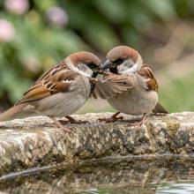
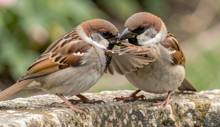
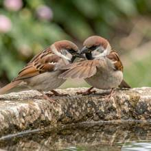
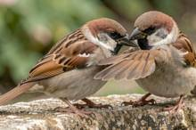
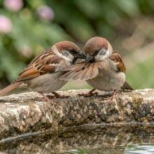
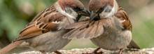
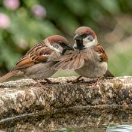

Attribute — Generating picture: Two sparrows are next to each other on the edge of
Generating picture: Two sparrows are next to each other on the edge of a rough stone drinking basin, one of them sorting feathers on the other wing with its beak.

Judge — Direct
- PASSAttribute - Material — The image shows two sparrows perched on the edge of a stone structure. The stone has an uneven, pitted, and weathered surface with some moss growing on it, which aligns with the description of 'rough stone'. There is also water visible to the right, indicating it is a drinking basin.
- PASSAttribute - Quantity — The image clearly depicts two birds with markings consistent with sparrows, satisfying the quantity requirement.
- FAILAction - Contact Interaction — The two sparrows are facing each other. There is a clump of feathers between them, with each bird's beak touching the feathers. However, one sparrow is not sorting the feathers on the other's wing. Instead, they appear to be interacting with a loose feather or feathers held between them.
Judge — Continuum
- PASSAttribute - Material — The image shows the sparrows perched on the edge of a basin. The material of the basin is visibly textured, with an uneven, pitted, and bumpy surface, which accurately depicts a rough stone material.
- PASSAttribute - Quantity — The image clearly and accurately depicts exactly two sparrows standing next to each other.
- PASSAction - Contact Interaction — The image shows one sparrow on the left with its beak touching the feathers of the outstretched wing of the sparrow on the right. This action visually represents one bird sorting the feathers of the other.
What the agent did
Thinking
We need need generate image using flux2-klein, inspect, edit. Need perhaps no final until completed. Need generate from prompt. Need fill visual detail. 1024 default likely fixed? User says generating picture. We can choose. We need no seed. Let's generate perhaps 1024x1024. Need ensure two sparrows next to each other edge of rough stone drinking basin, one sorting feathers on other's wing with beak. Let's craft detailed prompt, likely naturalism. Then inspect.
Step 1 — `generate_image`
{
"model": "flux2-klein",
"prompt": "A realistic close-up wildlife photograph of two small brown sparrows perched side by side on the rim of a rough weathered stone drinking basin. One sparrow gently preens and sorts the feathers along the other sparrow\u2019s open wing with its beak. The receiving sparrow sits calmly beside it, both birds clearly visible and touching at the edge of the basin. Shallow water below the stone rim, natural daylight, soft outdoor garden background, detailed feathers, sharp focus on the two birds and their interaction."
}Result img_0

Thinking
We see image. Need inspect concept. It looks two sparrows side by side on rough stone rim. But interaction maybe both beaks meeting on wing? One sorting feathers on other's wing? Right bird perhaps has wing open toward left, left bird beak on right bird's wing? Actually left bird's beak near feathers of right's wing, yes. But right bird's beak also near left? Need image exact: two sparrows; one preening other's wing. Good enough perhaps. Need mark best. The policy says inspect, perhaps no need tool unless details. We can use full image vision. It looks good. Need mark best as soon willing. Then maybe assess whether "one sorting feathers on the other wing" clearly depicted. It seems left bird beak is perhaps touching right bird's wing. Right bird's beak appears touching left? Actually could be mutual preening, which may violate singular one. We could improve with edit: make only left sparrow's beak engaged with right sparrow's wing; turn right bird's head slightly forward or down. But an edit could alter. Maybe prompt currently has right bird beak tucked near wing too? Let's inspect crop around birds to determine.
Step 2 — `inspect_region`
{
"image": "img_0",
"padding": 0.12,
"roi": "the beaks and open wing between the two sparrows"
}Result img_1

Thinking
Crop shows both beaks in contact, right bird's beak touching wing too? It looks mutual beak-to-beak maybe. User asks one sorting feathers on other's wing with beak. We should edit to clearly make left bird preen right bird's wing while right bird's beak away. Need maybe use edit_image targeted. Mark img_0 first because good enough? It is close. Call mark_best img_0. Then edit with targeted instruction. Could ask "Make the preening direction unambiguous: keep left sparrow's beak sorting feathers along right sparrow's open wing, and turn right sparrow's head slightly forward so its beak is no longer touching the other bird." Need not describe existing. This is a single change? It changes right head and contact. Good. Use flux2-klein, image img_0, maybe reference img_0 to preserve? Editing same current and reference maybe not necessary but can use references to preserve birds and basin. Prompt should delta only. "Make the grooming one-directional: only the left sparrow’s beak touches and sorts the right sparrow’s wing feathers; turn the right sparrow’s head slightly forward so its beak is clear of the other sparrow." That's concrete. Let's mark then edit.
Step 3 — `mark_best`
{
"image": "img_0",
"reason": "The scene already matches the requested subject and setting closely: two sparrows on a rough stone basin, with an apparent feather-preening interaction."
}Step 4 — `edit_image`
{
"image": "best",
"model": "flux2-klein",
"prompt": "Make the grooming one-directional: only the left sparrow\u2019s beak touches and sorts the right sparrow\u2019s open wing feathers; turn the right sparrow\u2019s head slightly forward so its beak is clear of the other bird.",
"references": [
"img_0"
]
}Result img_2

Thinking
img_2 maybe left bird beak on right bird's neck? Right bird head is forward? Actually right bird beak appears near left bird's beak still? Let's inspect crop.
Step 5 — `inspect_region`
{
"image": "img_2",
"padding": 0.1,
"roi": "the sparrows' heads, beaks, and the open wing"
}Result img_3

Thinking
It is still mutual? Right bird beak is at top of left's beak perhaps near feathers? Left's beak touches right's wing? Right bird head down toward the left. Actually one could interpret right bird preening left bird's neck. Not exact. Need perhaps a better composition generated from scratch? But policy says never regenerate from scratch when already mostly works. We can edit more. Need perhaps make right bird head look away, facing right, while left beak clearly at right wing. Target right bird's head only. Use edit_image: "Turn the right sparrow's head to face forward toward viewer, beak pointed down and away from left sparrow; move left sparrow's beak into the feathers on right sparrow's open wing." This is one localized behavior. Maybe use image=best? img_0 vs img_2. Img_2 perhaps better wing display but mutual still. We marked img_0. Could continue from img_2 directly. Need if edit worsens, can mark old. We should attempt. Maybe use segmentation + inpaint to confine head? But edit_image likely targeted. Yet two changes; can do one edit perhaps. Maybe ask only right bird's head turned away, leaving left beak position. Then left beak may look on right wing. Let's do. Prompt delta only: "Turn the right sparrow’s head forward and slightly downward, with its beak pointing away from the left sparrow and not touching anything." Might create anatomical issue. Better maybe turn head toward camera, beak closed. Keep left bird and wing untouched. Since edit_image can preserve. Use references img_2.
Step 6 — `edit_image`
{
"image": "img_2",
"model": "flux2-klein",
"prompt": "Turn only the right sparrow\u2019s head forward and slightly downward, with its closed beak pointing away from the left sparrow and touching nothing; keep the left sparrow\u2019s beak among the right sparrow\u2019s open wing feathers.",
"references": [
"img_2"
]
}Result img_4

Thinking
This actually looks pretty good. Right bird's beak points down into own chest/wing maybe touching nothing? It appears beak at feathers of own wing, while left beak maybe behind? Let's inspect.
Step 7 — `inspect_region`
{
"image": "img_4",
"padding": 0.1,
"roi": "the two sparrows' beaks and open wing"
}Result img_5

Thinking
Crop: left bird's beak is maybe touching right bird's wing? Right bird beak is also touching its own wing/chest? It looks like both beaks on same wing? User only asks one sorting feathers on other's wing. Need clear one direction. Maybe left bird's beak is hidden by right's head and wing, but appears perhaps touching wing. Right bird's beak also on own wing; so confusing. We should perhaps generate with a more explicit composition where grooming bird is on left and receiving bird on right with head facing away; groomer's beak visibly in wing feathers, receiver head facing front or right. Maybe current is close enough but could improve. We need avoid impossible. Let's understand anatomical composition. Maybe use edit to "move the right sparrow's beak upward and away from wing, head upright, eyes looking forward." This would remove right beak from wing. Left beak remains among right wing feathers. Need target only right head. Could use segmentation/inpaint maybe because edit_image changes whole. But likely edit_image. Prompt "Lift only the right sparrow's head into an upright resting pose, beak closed and held clear of all feathers; keep the left sparrow's beak visibly sorting the right sparrow's wing." Let's try from img_4. If result has right head upright and left preening, great. Use refs.
Step 8 — `edit_image`
{
"image": "img_4",
"model": "flux2-klein",
"prompt": "Lift only the right sparrow\u2019s head into an upright resting pose, with its closed beak held clear of all feathers; keep the left sparrow\u2019s beak visibly sorting the right sparrow\u2019s wing feathers.",
"references": [
"img_4"
]
}Result img_6

Thinking
This is much clearer: right bird upright, left bird beak near right wing, sorting. Is left beak touching wing or under right head? It looks left bird's beak inserted into right bird's chest / wing root. The right wing is open with feathers. User asks other wing; yes. Right bird's head clear. This likely matches. Need mark_best img_6. We should inspect crop maybe enough. Could stop. Need mark now.
Step 9 — `mark_best`
{
"image": "img_6",
"reason": "This version makes the interaction clearest: the left sparrow is sorting the other sparrow\u2019s wing feathers while the receiving sparrow sits upright beside it on the rough stone basin."
}Thinking
Now final concise mention done. Could perhaps no need embed? Tool output already visible? In final, say completed. Since image generated inline. We need maybe final with no extra.
Model
Done — the final image shows two sparrows side by side on a rough stone drinking basin, with one gently sorting the other’s wing feathers.